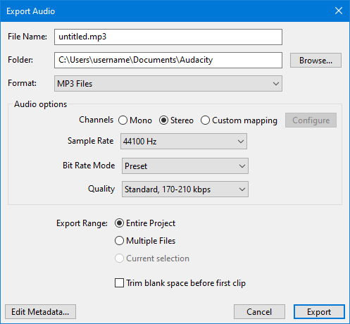

MP3 Export Options
- set the Sample Rate for the export
- choose between variable, average or constant bit rate, or from one of four common presets.
- The MP3 export will always use joint stereo for the exported audio file.
As with all lossy, compressed formats, there is a trade-off between the size of the file and the quality of the encoded file, higher quality requiring larger files.
Note that MP3 files have a short silence at the beginning due to encoder delay. This is a limitation of the MP3 format. Audacity uses LAME Mp3 info tag to store the exact length of added silence. Applications that support this tag, (including Audacity), are then able to automatically strip off the added silence. Many apps still do not support this feature, and will therefore show a small amount of added silence at the beginning of the file. If you need to synchronize files or are making Audio Loops, it is highly recommended to use a format that does not have this limitation, such as WAV, FLAC or Ogg Vorbis.
Audacity uses LAME for encoding MP3s, which is generally considered to be the best MP3 encoding library, and is the only MP3 encoding library that is still being actively developed.
- When using Export Audacity will only export tracks that are not grayed-out by use of the or buttons in the tracks' Track Control Panels.
- Also note that any hidden parts of audio clips are not exported, see Audio Tracks and Clips.
- Accessed by: then choosing MP3 from the Format dropdown menu.
- 
| Re-encoding to MP3 If you import an MP3 into Audacity, edit it then export it as an MP3, you will lose quality twice, once in the original MP3 encoding of the imported audio, then again when you export it from Audacity as MP3. So never do production work in MP3, instead work with a lossless format such as WAV, AIFF or FLAC and for final use then export to MP3. |
MP3 Export Setup
Channels
Sets the number of channels for the exported audio file. There are three options
- Mono: single channel
- Stereo: stereo pair with left and right channels - this is always "joint stereo"
- Custom mapping: use this to export multi-channel (surround sound) files or to make customized assignments between Audacity tracks and the channels in the exported file.
- Selecting this and clicking on the button causes the Advanced Mixing Options dialog to appear. For details please see Advanced Mixing Options.
Sample Rate
Sample rate can be chosen from:
- 32000 Hz
- 44100 Hz - default setting
- 48000 Hz
Bit Rate Mode
- Preset: Default setting, this offers the various Quality settings recommended by the LAME developers for encoding music.
- Variable: This mode continuously varies the bit rate used according to the complexity of the sound, in an attempt to maintain the quality of the recording at a consistent level. The settings range from 0 (highest quality) to 9 (smallest file size). Each setting defines a range of bit rates within which it will generally operate, assuming a stereo track. For a mono track, the achieved bit rate for each setting will usually be below the range indicated above.
Level 0 is comparable to the Extreme preset mentioned above, level 2 is comparable to Standard and level 4 to Medium presets. Variable bit rate offers the best quality compared to the Average and Constant bit rate options in most circumstances (extremely quiet music is one exception). It will tend to give you somewhat smaller file sizes for a given degree of quality, but the actual file sizes cannot be accurately predicted in advance.
- Average: This sets a known, average bit rate for the file, but within this average permits some fluctuations in bit rate to reflect the relative difficulty of encoding the file. This does not provide as consistently high a quality as variable bit rate, but is generally preferable to constant bit rate if you need to know more or less how large your files will be; it offers bit rates from 8 kbps to 320 kbps.
- Constant: This sets a constant bit rate for the encoding, regardless of its complexity. Of the four bit rate modes, this usually gives the worst, least consistent quality for a given file size, but that size itself is completely predictable (note that if you choose a high bit rate, the LAME encoder may use a lower constant bit rate if you choose 11,025 Hz or lower project sample rate). Use constant bit rate if you are streaming the file over the Internet, as it ensures the audio cannot stutter due to sudden peaks in the bit rate. The available bit rates are the same as for average bit rate - the default rate (128 kbps) gives you a known file size of about 1 MB per minute of mono or stereo audio.
Quality
Fort the default Preset mode this list offers the various Quality settings recommended by the LAME developers for encoding music.
- Excessive: The best possible encoding quality. This preset has a constant bit rate of 320 kbps, which is equivalent to 2.4 MB per minute. This setting is generally considered to be overkill as there is little if any difference in sound quality from the "Extreme" preset, but with much greater file size.
- Extreme: Extremely high quality. This setting will normally produce transparent results, but with considerably smaller file size than the "Excessive" preset.
- Standard: Very good quality encoding. This is the default setting in Audacity.
- Medium: Good sound quality suitable for casual listening or portable devices.
For the other modes this list lets you select the bit rate in kbps (kilobits per second) for encoding your file. A higher bit rate always gives better quality but at the expense of a larger file size and vice versa.
The bit rates are absolute for average and constant bit rate modes, but expressed as a range for the Variable and Preset modes (except for the Excessive preset).
Recommended settings
The default MP3 encoding options in Audacity are 170 - 210 kbps VBR (preset "Standard"). While this is a good choice for stereo music, it is not generally recommended for Podcasts.
For better than "very good" for music, you should really be using 256 kbps VBR (Variable Bit Rate). Good for home use but not for streaming.
Podcast settings
For podcasts, "CBR" (Constant Bit Rate) is recommended, and not "VBR" (Variable Bit Rate).
The choice of mono/stereo depends on the type of podcast. For voice only podcasts, mono is usually preferred as you can achieve better sound quality with less data. If the podcast contains a lot of music you may prefer to use stereo, but higher bit rates will probably be required (bigger file size).
- 64 kbps CBR mono can give reasonable quality for voice if you are wanting to minimize the file size.
- 96 kbps CBR mono can give excellent quality for voice.
- 128 kbps CBR stereo can give reasonable quality where stereo is required.
- 192 kbps CBR stereo can give very good quality where stereo is required.
- 256 kbps VBR stereo can give excellent quality stereo music, though not recommended for streaming.